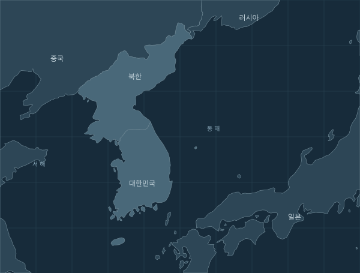

외교 대응
한·미·일 외교장관, 억제 태세와 대화 노력 재확인
한국 외교부는 10월 30일 미국 애틀랜타에서 한·미·일 외교장관회의가 열렸으며, 한반도 정세와 외교적 노력을 논의했다고 발표했습니다.
왜 주목하나요외교적 입장과 협의의 기록입니다. 같은 날 실무 당국의 전화 협의와는 별도 회의이며, 공동 입장만으로 실제 긴장이 낮아졌다고 판정하지 않습니다.
자료 확인 확인 범위 점검 중
일본 방위성은 10월 29일 낮 북한이 탄도미사일로 추정되는 물체를 발사했다고 발표했습니다. 해당 발표는 한반도 동해안 부근에 낙하한 것으로 추정했습니다. 같은 기간의 외교 발표도 아래 사건 기록에서 따로 확인할 수 있습니다.
공개된 기관 발표와 검토 기록을 정리한 상황 요약입니다. 전쟁 확률이나 안전 판정이 아닙니다.
발생·게시 기준과 이 사이트의 기록 갱신 시각은 다릅니다.

도시·지역 단위 표시입니다. 실제 발사·피해 지점을 뜻하지 않습니다.
사건 기록에서 확인기사 수가 아닌 검토한 사건 기록 수를 봅니다.
5건의 등록 사건
이전 기간과 직접 비교할 수 없습니다등록 사건 · 이전 기간과 수집·검토 범위가 같다는 검증이 없어 증가율과 위험 추세는 계산하지 않습니다.
수집 범위가 같을 때만 증감을 계산합니다.
8건의 등록 사건
이전 기간과 직접 비교할 수 없습니다등록 사건 · 이전 기간과 수집·검토 범위가 같다는 검증이 없어 증가율과 위험 추세는 계산하지 않습니다.
수집 범위가 같을 때만 증감을 계산합니다.
확인된 사실과 해석을 구분해서 읽습니다.
한국 외교부는 10월 30일 미국 애틀랜타에서 한·미·일 외교장관회의가 열렸으며, 한반도 정세와 외교적 노력을 논의했다고 발표했습니다.
왜 주목하나요외교적 입장과 협의의 기록입니다. 같은 날 실무 당국의 전화 협의와는 별도 회의이며, 공동 입장만으로 실제 긴장이 낮아졌다고 판정하지 않습니다.
일본 외무성은 10월 3일 북한의 발사에 대응해 같은 날 한·미·일 외교 당국이 전화 협의를 했다고 발표했습니다.
왜 주목하나요발사와 외교 대응의 시간 순서를 보여주는 기록입니다. 같은 사건을 다루는 기사 수를 위험의 크기로 사용하지 않습니다.
일본 방위성은 10월 3일 오전 북한 동해안 부근에서 최소 한 발의 탄도미사일이 발사됐으며, 일본 배타적경제수역 밖에 낙하한 것으로 추정했습니다.
왜 주목하나요10월의 발사 발표를 날짜별로 비교하기 위한 과거 기록입니다. 오늘 새롭게 발생한 사건이나 검증된 전쟁 확률로 표시하지 않습니다.
일본 외무성은 10월 13일 한·미·일 당국이 전날 북한의 발사에 관해 전화 협의를 했다고 발표했습니다.
왜 주목하나요10월 12일 발사에 이어진 외교 대응을 연결합니다. 후속 협의 보도를 별도의 군사행동으로 세지 않습니다.
일본 방위성은 10월 12일 오전 북한 내륙에서 최소 두 발의 탄도미사일이 발사됐다고 발표했습니다. 연속된 발사 발표들을 하나의 사건 기록으로 묶었습니다.
왜 주목하나요발사체 수와 사건 기록 수는 다릅니다. 같은 날의 연속 발사와 그 후속 보도들을 더해 여러 독립 사건처럼 보이게 하지 않습니다.
국방부는 10월 23일 군사분계선 위치 확인, 군통신선 복원과 접경지역 우발충돌 방지 방안을 논의할 군사당국회담을 북한에 제안했습니다.
왜 주목하나요대화 제안은 실제 회담 개최나 군통신선 복원과 구분해야 합니다. 접경지역 긴장 완화로 이어졌는지는 북측 반응과 후속 조치를 더 확인해야 합니다.
일본 외무성은 다국적 제재모니터링팀 참여국과 EU가 10월 28일 대북 제재 공동성명을 발표했다고 전했습니다.
왜 주목하나요군사행동과 제재·정책 조치를 분리해 상황을 읽도록 하는 기록입니다. 공동성명 발표일을 모든 개별 제재의 시행일로 해석하지 않습니다.
일본 외무성은 한·미·일 외교 당국이 북한의 10월 29일 발사에 대응해 30일 전화 협의를 했다고 발표했습니다.
왜 주목하나요발사 다음 날의 외교 대응을 연결해 보여줍니다. 전화 협의가 새로운 발사나 군사 충돌 한 건으로 중복 계산되지 않도록 구분합니다.
일본 방위성은 10월 29일 낮 북한이 탄도미사일로 추정되는 물체를 발사했다고 발표했습니다. 해당 발표는 한반도 동해안 부근에 낙하한 것으로 추정했습니다.
왜 주목하나요새로운 발사 발표와 이후 외교 대응을 별개의 변화로 볼 필요가 있습니다. 물체의 종류에 남아 있는 추정을 그대로 유지하며 전쟁 가능성 수치로 환산하지 않습니다.
외교부가 10월 31일 한·영 외교장관 회담에서 한반도 정세를 논의했다고 발표했습니다. 이 발표만으로 군사적 위험의 상승이나 하락을 판단하지 않습니다.
필터를 바꾸거나 아래 출처에서 원문을 확인하세요. 기록이 없다는 것이 실제 사건이 없다는 뜻은 아닙니다.
막대는 수집 기사 수가 아닌 검토·등록된 사건 기록 수입니다. 중복 등록이 확인되면 정정합니다. 발생일 미상은 게시일을 쓰며 오늘은 아직 끝나지 않은 기간입니다. 0건은 실제 활동이 없었다는 뜻이 아닙니다.
마지막 점검 2026.11.02 03:58 KST
한국 여행정보의 현재 공개 문서 1개. 최신 변경이 입국·보건 정보일 수도 있습니다.
GOV.UK 공개 API·OGL 자료. 제3자 권리가 있는 자료는 제외. 여행정보는 군사 경보와 다릅니다.
원문 자료원 열기마지막 점검 2026.11.02 03:58 KST
최근 30일 정책브리핑의 북한·한미·훈련·미사일 검색별 앞 2페이지, 국방·외교·통일·방위사업 관련 최대 40건. 전체 군사 사건을 포괄하지 않습니다.
개별 상세 페이지의 공공누리 제1유형 또는 제2유형을 확인한 텍스트만 원문 대조와 AI 분석에 사용합니다. 사진·이미지와 변경금지 유형은 제외합니다. 허용 표식을 찾지 못하면 링크만 남깁니다.
검색 페이지 상한으로 목록 일부만 확인했습니다.
원문 자료원 열기마지막 점검 2026.11.01 17:17 KST
현재 연도 영문 보도자료 목록의 Korea·DPRK·ballistic·missile 제목. 영문에 없는 발표를 포함하지 않습니다.
한반도 핵심 미사일 발표를 다루는 방위성 북한 동향 목록으로 수집 경로를 전환했습니다. 이 영문 목록은 현재 자동 수집하지 않습니다.
원문 자료원 열기마지막 점검 2026.11.02 03:59 KST
USFK 단위 RSS 앞 30개 중 최근 30일 /news/ 기사. 사진·영상·다른 미군 기관·전군 발표는 포함하지 않습니다. 훈련·행사 공지도 포함될 수 있습니다.
USFK 공식 RSS에서 발견한 기사 중 개별 PUBLIC DOMAIN 표식이 확인된 기사 텍스트만 AI 분석에 사용합니다. 사진·영상·군 표장과 제3자 자료는 제외하며 미국 정부의 보증·후원을 뜻하지 않습니다.
원문 자료원 열기마지막 점검 확인되지 않음
아시아 뉴스 RSS 후보. 현재 자동 수집·분석하지 않으며 자료 점검률에도 포함하지 않습니다.
RSS 접근은 확인했으나 BBC 개인 이용 조건의 피드 변경 금지·메타데이터 추출 제한 때문에 현재 선별 저장 방식은 비활성화했습니다. 허용되는 피드 표시 방식 또는 별도 이용 허락 확인 후 연결합니다.
원문 자료원 열기마지막 점검 2026.11.02 03:59 KST
북한 동향 공식 목록 중 최근 30일 발표 링크, 최대 30건. 접근이 막히면 점검 실패로 표시합니다. 별도로 직접 열람한 사건은 출처를 붙여 검토 등록할 수 있습니다.
공식 북한 동향 목록의 최근 발표 링크를 확인합니다. 요청 환경에 따라 성공과 403 응답이 모두 관측되어 매번 상태를 확인합니다. 본문 자동 분석은 이용조건 확인 후 활성화하며, 실패를 숨기거나 우회하지 않습니다.
원문 자료원 열기과거 전체 자료의 수집 범위를 확인 중입니다. · 수집 대상 밖의 사건이나 지연된 발표가 있을 수 있습니다. 가상 데이터로 기능 확인